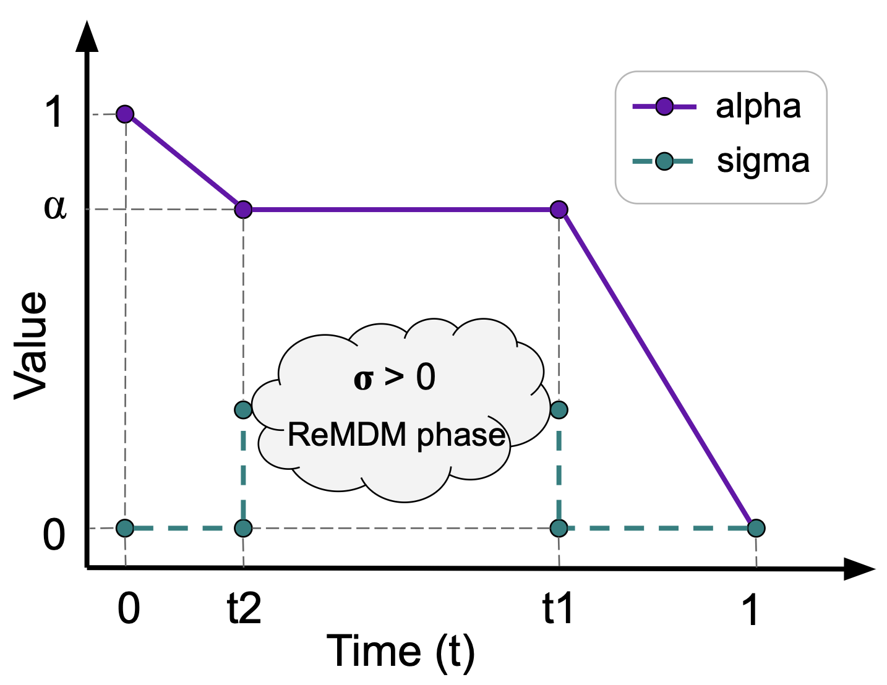

ReMDM opens up a broad design space of remasking samplers with few constraints. Here, we explore some of them. We empirically find that for different tasks, different \(\sigma_t\) schedules work the best.
Max-capped Schedule. We can potentially reduce the maximum probability of remasking to a constant \(\eta_{cap} \in [0, 1]\). Concretely, we let \(\sigma_t = min\{\eta_{cap}, \frac{1-\alpha_s}{\alpha_t}\}\), for all \(t \in [0, 1]\). We denote this schedule as “ReMDM-cap.”
Rescaled Schedule. Alternatively, we can temper the chances of remasking by setting \(\sigma_t = \eta_{rescale}\cdot\sigma_{t}^{max}\), with \(\eta_{rescale} \in [0, 1]\) as a hyperparameter that controls this rescaling. We denote this schedule as “ReMDM-rescale.”
Confidence-Based Schedule. In conjunction with the two strategies above, we explore a further reweighing of \(\sigma_t\) which is based on the intuition that tokens of which
the denoising model is less confident should be assigned a larger probability of remasking. In the previous part of this blog post, if \(t\) is fixed, then the \(\sigma_t\) value for each token in the sequence is the same. Now let's consider different \(\sigma_t\) for
tokens at different positions. Consider the \(\ell\)-th token in a sequence of \(L\) latents at time \(t\). For each \(\ell \in \{1, \ldots, L\}\),
we store its decoding probability at the time \(\tau\) at which it was last unmasked. Concretely, if \(\mathbf{z}_t^{(\ell)} \neq \mathbf{m}\), then we define \( \psi_t^{(\ell)} := \mathbf{x}_{\theta, \tau}^{(\ell)\top}\mathbf{z}_\tau^{(\ell)} \)
If \(\mathbf{z}_t^{(\ell)} = \mathbf{m}\), then \( \psi_t^{(l)} := \infty\). Thus, \(\psi_t^{(\ell)}\) serves as a 'confidence score' for unmasked tokens. We then compute \(\sigma_t^{(\ell)} = \eta_{conf}^{\ell} \cdot \sigma_t\), where
\(\eta_{conf}^{(\ell)} = \frac{\exp(-\psi_t^{(\ell)})}{\sum_{\ell^\prime=1}^L \exp(-\psi_{t}^{(\ell^\prime)})} \). With this schedule, masked tokens are decoded using the approximate posterior from MDLM, and the unmasked tokens
are remasked negatively proportional to their confidence. We denote this schedule as “ReMDM-conf.”
So far, we have been applying remasking for all \(t \in [0, 1]\). However, there may be certain periods in the generation process when remasking is not necessary. For example, in the early phase of sampling when few tokens are unmasked,
remasking them may do little good but slow down the generation. Therefore, we propose two methods for optionally 'turning on/off' ReMDM sampling, which amount to the following modification of the \(\sigma_t\) schedules above:
$$
\tilde{\sigma}_t = \begin{cases} \sigma_t, & \text{if } t \in [t_{on}, t_{off}), \text{with } t_{on} > t_{off} \\
0, & \text{otherwise}. \end{cases}
$$
Switch. We choose some \(t_{switch} \in (0, 1]\) and we have \( [t_{on}, t_{off}) = [t_{switch}, 0) \). We denote this strategy as “ReMDM-switch.”
Loop. In this strategy, we set both \(t_{on}, t_{off} \in (0, 1] \). Furthermore, in the range when ReMDM is activated, we modify the noise schedule to be constant, such that
\(\alpha_t = \alpha(t_{on})\). As shown in the figure below, this divides the sampling process into three phases. In the first phase, the model generates tokens without remasking (\(\sigma_t = 0\), i.e., using MDLM). In the
second phase, we hold \(\alpha\) constant (i.e., \(\alpha_s = \alpha_t\)), and the model is asked to remask and predict a proportion of the generated tokens in a loop. In particular,
one can use any ReMDM strategy introduced above in this phase. Intuitively, if a 'bad' token is remasked, it will likely be replaced with a 'good' token due to the abundant context.
Even if a 'good' token happens to be remasked, since the signal-to-noise ratio is designed to be high in this portion of the generation process, it will likely be re-decoded as other (if not the same)
'good' tokens. In this way, ReMDM-loop corrects the 'bad' tokens and maintains the 'good' tokens, i.e., fixes mistakes. Finally, in the third phase, we let the
model predict any remaining unmasked tokens using the MDLM posterior. We denote this strategy as “ReMDM -loop.”

Depiction of ReMDM-loop \(\alpha_t\) and \(\sigma_t\) schedules.